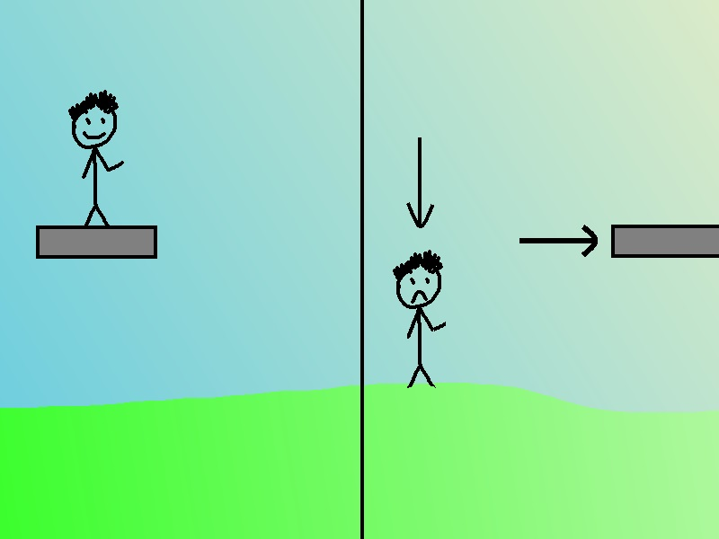

Hello again! This week we'll be looking at Platforms and Interactibles. To be honest moving platforms took me a ridiculous amount of time given how simple of a task it is going through various iterations before settling the current solution. Nevertheless, lets start with Interactibles. My code is setup using mostly Inheritance with some abstract classes that define generic fields and methods for any given type of object. we are aware that some (if not most) games use Interfaces way more but we ultimately decided to use inheritance because we were more used to that style. So for interactible objects, we created an abstract class from which every object would derive from.
First off let's define what every interactible object does:
- Displays Interact GUI when the player is close.
- Does "Something" when interacted with
- If it cannot be interacted with, do something else (eg. show an error string)
One way to know if the player is close is to subtract the position of the object to position of the player, but that would mean that every interactible object would have to keep track of the player individually and doing that calculation every update. Instead, we used a trigger collider and every time something tagged as "Player" entered the trigger, it would show a simple GUI element to the player.
Now it needs to do something when interacted with, and there are a couple of ways to do this. The choice is between a C# event (our first approach) or a UnityEvent (what we decided to use). Unity events are basically a wrapper for native C# events and they are slower (a lot slower) but are perfectly integrated in the Unity editor so they give a very helpful UI where you can drag GameObjects and select which method to call when the event is triggered.
So this is what the interactible class looks like:
public abstract class Interactible: MonoBehaviour {
protected PlayerController player;
protected PlayerStats playerStats;
public string errorString;
public UnityEvent onInteract;
public ErrorTextManager errorText;
[HideInInspector]
public bool activated;
virtual public void Interact() {
onInteract.Invoke();
}
public virtual void Start() {
errorText = FindObjectOfType();
}
public virtual void OnTriggerEnter(Collider other) {
//get the player controller and stats. Stats are required to check for the number of crystals collected.
//signals the player controller to show the interact GUI.
if (other.tag == "Player") {
player = GameMainManager.instance.player;
playerStats = GameMainManager.instance.playerStats;
player.interactFlag = true;
player.interactingWith = this;
}
}
public virtual void OnTriggerExit(Collider other) {
if (other.tag == "Player") {
player.interactFlag = false;
player.interactingWith = null;
}
}
public virtual void DisplayErrorString() {
errorText.ShowMessage(errorString);
}
}
Now we need a class that extends the Interactible class. The first that came to mind and that we used extensively in the levels is a InteractionSender. This class is an almost direct implementation with an some extra features tied in like an animator and the ability to activate or disable the emission of the material it's on.
public class InteractionSender : Interactible {
public int earthCollectReq;
public int fireCollectReq;
public int airCollectReq;
public int waterCollectReq;
public float waitTime;
EmissionActivator emissionActivator;
Animator anim;
public override void Start() {
base.Start();
anim = GetComponentInChildren();
emissionActivator = GetComponent();
errorString = "You need more crystals!";
}
public override void Interact() {
//check if the player is allowed to interact based on the number of crystals collected. if he has them then call the superclass.Interact()
if (CheckCrystals()) {
base.Interact();
activated = true;
//this code could be removed due to the unity events tied to the recievers. They could handle this but since it's pretty standard i'll leave it here.
if (anim != null) {
anim.SetTrigger("Active");
}
if (emissionActivator != null) {
emissionActivator.Activate();
}
} else {
DisplayErrorString();
}
}
private bool CheckCrystals() {
if (playerStats.earthCrystals >= earthCollectReq
&& playerStats.fireCrystals >= fireCollectReq
&& playerStats.airCrystals >= airCollectReq
&& playerStats.waterCrystals >= waterCollectReq) {
return true;
}
return false;
}
}
We also implemented an Interaction Reciever class, I know it's slightly redundant but it helps tie events easily in the inspector and also means that the recieving object isn't tied to the sender to recieve commands.
public class InteractionReciever : MonoBehaviour {
public UnityEvent onActivate;
public UnityEvent onDisable;
[HideInInspector]
public bool active;
public virtual void Activate() {
active = true;
onActivate.Invoke();
}
public virtual void Disable() {
active = false;
onDisable.Invoke();
}
}
Moving Platforms
When we first started implementing platforms, we thought they were easy but we soon realised that to get a decent looking moving platform, it would require a little more than antipated. First off, the desired behaviour is that the player moves with the platform, but as illustrated in my beautiful artistic rendition, that's not what happens normally.
<>So basically we'll need make the player controller scripts aware of what is moving towards or away from the player. Now onto the bigger problem: the movement itself. Here are the methods we tried to implement:
- Linearly interpolating between two positions.
- Linearly interpolating between two Transforms
- Using fancy math to generate runtime curves to drive the platform
- Using a Coroutine to start the platform moving in one direction for a fixed amount of time and then firing a second one to reverse it
The first three methods have a big problem: versatility. For any given platform there is no way for it to go around in a circle, or move in any other pattern without having a long list of objects to interpolate between. The coroutine is a little better because the only thing that that drives the movement is time. This approach however, is very CPU intensive because it would be firing multiple coroutines (per platform). The best way to tackle this in our opinion is with animation, more specifically animation curves. AnimationCurve is a type of variable you can use in Unity that lets you specify any curve you want and then sample or modify it in the script. Here's the Moving platform class and the inspector view:
public class MovingPlatform : InteractionReciever {
public enum PlatformType { Standard, Falling, Stepper };
public bool activateOnStart=true;
public float speed;
public AnimationCurve curve;
public Transform platform;
public Transform finalPos;
public Transform startPos;
public PlatformType platformType;
public Vector3 stepperDegrees;
private float curveTime;
private float curveProgress;
private bool running;
private Vector3 oldScale;
private Rigidbody rigidBody;
private Transform player;
private void Start() {
active = false;
ResetPosition();
if (activateOnStart) {
base.Activate();
}
rigidBody = GetComponentInChildren();
player = GameMainManager.instance.player.transform;
}
private void FixedUpdate() {
running=SetRunningState();
if (running && active) {
if (platformType == PlatformType.Standard) {
curveTime += Time.deltaTime * speed;
curveProgress = curve.Evaluate(curveTime);
rigidBody.MovePosition(Vector3.LerpUnclamped(startPos.position, finalPos.position, curveProgress));
rigidBody.MoveRotation(Quaternion.Slerp(startPos.rotation, finalPos.rotation, curveProgress));
}
}
}
private bool SetRunningState() {
float distance = Vector3.Distance(transform.position, player.position);
return distance > 150 ? false : true;
}
public void Move() {
if (platformType == PlatformType.Stepper) {
Step();
}
}
private void Step() {
StartCoroutine("MoveStep");
}
public IEnumerator MoveStep() {
curveTime = 0;
Vector3 rotTarget = platform.rotation.eulerAngles;
rotTarget += stepperDegrees;
curveProgress = curve.Evaluate(curveTime);
while (curveProgress < 1) {
rigidBody.MovePosition(Vector3.LerpUnclamped(startPos.position, finalPos.position, curveProgress));
rigidBody.MoveRotation(Quaternion.LerpUnclamped(startPos.rotation, Quaternion.Euler(rotTarget), curveProgress));
curveTime += Time.deltaTime * speed;
curveProgress = curve.Evaluate(curveTime);
yield return null;
}
}
public void ResetPosition() {
running = false;
platform.position = startPos.position;
curveTime = 0;
curveProgress = 0;
}
private void OnDrawGizmosSelected() {
Gizmos.color = Color.green;
Gizmos.DrawWireCube(startPos.position, platform.localScale);
Gizmos.color = Color.red;
Gizmos.DrawWireCube(finalPos.position, platform.localScale);
}
}
Note that this class inherits from InteractionReciever so we can use the OnActivate event it inherits to tell the platform to move. It will then sample the AnimationCurve every frame to know where it's next position will be. After that it will interpolate between the initial position and the target position. Every AnimationCurve can be set to
- Clamp: After the curve finishes, it will stay at that position forever
- Loop: After the curve finishes, will start again from the first value, looping forever.
- PingPong: After the curve finishes, it will play the animation backwards, looping forever
We also implemented a enum containing all the different types of a platform: Standard, Stepper, and Falling (more will be probabily added). Stepper is a platform that only move a fixed amount (or step) per activation, for example the player may have to orient some mirrors in the correct way to complete the level (more info coming in the future). Falling is pretty self-explanatory.